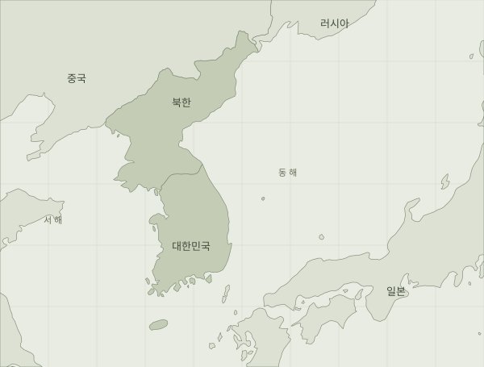

철원 전방부대 하사 1명 사망…군·경 경위 조사
11월 2일 강원 철원군의 육군 전방부대에서 하사 1명이 사망했다고 육군 발표를 인용한 보도가 나왔습니다. 군과 민간 수사기관이 정확한 원인과 경위를 조사하고 있습니다. SBS 후속 보도는 육군이 당시까지 대북 용의점이 없는 것으로 보고 있다고 전했습니다.
이 소식의 근거 읽기사건을 따라가고, 근거를 확인합니다.
11월 2일 강원 철원군의 육군 전방부대에서 하사 1명이 사망했다고 육군 발표를 인용한 보도가 나왔습니다. 군과 민간 수사기관이 정확한 원인과 경위를 조사하고 있습니다. SBS 후속 보도는 육군이 당시까지 대북 용의점이 없는 것으로 보고 있다고 전했습니다.
이 소식의 근거 읽기
도시·지역 단위 표시입니다. 실제 발사·피해 지점을 뜻하지 않습니다.
사건 기록에서 확인네모 1개 = 검토한 사건 1건
이전 기간과 비교 불가
최근 24시간 · 전국 문자 14건 확인
미국 국무부의 한국 여행 주의등급
입국·현지 상황 등 여행 전반의 안내
국내는 발송기록, 해외는 여행정보입니다. 실시간 경보 수신·현재 발령 상태를 뜻하지 않습니다.
검토한 발표·보도의 기록입니다. 전쟁 확률이나 공식 경보가 아니며, 기록이 없다고 실제 사건이 없었다는 뜻은 아닙니다.
정확한 시각이 없어 24시간 포함 여부를 확정할 수 없는 기록 1건은 별도입니다.
제목을 누르면 근거와 미확인 내용을 볼 수 있습니다.
JTBC와 SBS는 9월 1일 오전 경남 사천 공군기지 인근에서 KT-1 훈련기 2대가 충돌했다고 보도했습니다. 두 기체는 비상착륙했고 인명피해는 없었지만 기체 일부가 손상됐다는 내용입니다. 11월에 확인한 보도이며, 사고 발생일은 9월 1일로 구분합니다.
11월 2일 강원 철원군의 육군 전방부대에서 하사 1명이 사망했다고 육군 발표를 인용한 보도가 나왔습니다. 군과 민간 수사기관이 정확한 원인과 경위를 조사하고 있습니다. SBS 후속 보도는 육군이 당시까지 대북 용의점이 없는 것으로 보고 있다고 전했습니다.
한국 외교부는 10월 30일 미국 애틀랜타에서 한·미·일 외교장관회의가 열렸으며, 한반도 정세와 외교적 노력을 논의했다고 발표했습니다.
일본 외무성은 10월 3일 북한의 발사에 대응해 같은 날 한·미·일 외교 당국이 전화 협의를 했다고 발표했습니다.
일본 방위성은 10월 3일 오전 북한 동해안 부근에서 최소 한 발의 탄도미사일이 발사됐으며, 일본 배타적경제수역 밖에 낙하한 것으로 추정했습니다.
일본 외무성은 10월 13일 한·미·일 당국이 전날 북한의 발사에 관해 전화 협의를 했다고 발표했습니다.
일본 방위성은 10월 12일 오전 북한 내륙에서 최소 두 발의 탄도미사일이 발사됐다고 발표했습니다. 연속된 발사 발표들을 하나의 사건 기록으로 묶었습니다.
국방부는 10월 23일 군사분계선 위치 확인, 군통신선 복원과 접경지역 우발충돌 방지 방안을 논의할 군사당국회담을 북한에 제안했습니다.
일본 외무성은 다국적 제재모니터링팀 참여국과 EU가 10월 28일 대북 제재 공동성명을 발표했다고 전했습니다.
일본 외무성은 한·미·일 외교 당국이 북한의 10월 29일 발사에 대응해 30일 전화 협의를 했다고 발표했습니다.
일본 방위성은 10월 29일 낮 북한이 탄도미사일로 추정되는 물체를 발사했다고 발표했습니다. 해당 발표는 한반도 동해안 부근에 낙하한 것으로 추정했습니다.
외교부가 10월 31일 한·영 외교장관 회담에서 한반도 정세를 논의했다고 발표했습니다. 이 발표만으로 군사적 위험의 상승이나 하락을 판단하지 않습니다.
필터를 바꾸거나 아래 출처에서 원문을 확인하세요. 기록이 없다는 것이 실제 사건이 없다는 뜻은 아닙니다.
기사 수가 아닌 검토한 사건 기록 수를 봅니다.
6건의 등록 사건
이전 기간과 직접 비교할 수 없습니다등록 사건 · 이전 기간과 수집·검토 범위가 같다는 검증이 없어 증가율과 위험 추세는 계산하지 않습니다.
수집 범위가 같을 때만 증감을 계산합니다.
9건의 등록 사건
이전 기간과 직접 비교할 수 없습니다등록 사건 · 이전 기간과 수집·검토 범위가 같다는 검증이 없어 증가율과 위험 추세는 계산하지 않습니다.
수집 범위가 같을 때만 증감을 계산합니다.
자료원 9/9곳 연결 · 수집했지만 사건으로 등록하지 않은 문서 88건
막대는 수집 기사 수가 아닌 검토·등록된 사건 기록 수입니다. 중복 등록이 확인되면 정정합니다. 발생일 미상은 게시일을 쓰며 오늘은 아직 끝나지 않은 기간입니다. 0건은 실제 활동이 없었다는 뜻이 아닙니다.
마지막 수집 시도 2026.11.03 03:17 KST
마지막 수집 성공 2026.11.03 03:17 KST
한국 여행정보의 현재 공개 문서 1개. 최신 변경이 입국·보건 정보일 수도 있습니다.
GOV.UK 공개 API·OGL 자료. 제3자 권리가 있는 자료는 제외. 여행정보는 군사 경보와 다릅니다.
원문 자료원 열기마지막 수집 시도 2026.11.03 03:17 KST
마지막 수집 성공 2026.11.03 03:17 KST
최근 30일 정책브리핑의 북한·한미·훈련·미사일·장병·사망·부상·지뢰·접경 검색별 앞 2페이지, 국방·외교·통일·방위사업·각군 관련 최대 40건. 이 중 최대 10건은 인명피해·접경 제목을 우선하고 나머지는 최신순으로 확인합니다. 검색·처리 상한과 기관 발표 누락이 있어 전체 군사 사건을 포괄하지 않습니다.
개별 상세 페이지의 공공누리 제1유형 또는 제2유형을 확인한 텍스트만 원문 대조와 AI 분석에 사용합니다. 사진·이미지와 변경금지 유형은 제외합니다. 허용 표식을 찾지 못하면 링크만 남깁니다.
검색 페이지 상한으로 목록 일부만 확인했습니다. 자료 처리 상한으로 일부 자료만 확인했습니다.
원문 자료원 열기마지막 수집 시도 2026.11.01 17:17 KST
마지막 수집 성공 2026.11.01 17:17 KST
현재 연도 영문 보도자료 목록의 Korea·DPRK·ballistic·missile 제목. 영문에 없는 발표를 포함하지 않습니다.
한반도 핵심 미사일 발표를 다루는 방위성 북한 동향 목록으로 수집 경로를 전환했습니다. 이 영문 목록은 현재 자동 수집하지 않습니다.
원문 자료원 열기마지막 수집 시도 2026.11.03 03:17 KST
마지막 수집 성공 2026.11.03 03:17 KST
USFK 단위 RSS 앞 30개 중 최근 30일 /news/ 기사. 사진·영상·다른 미군 기관·전군 발표는 포함하지 않습니다. 훈련·행사 공지도 포함될 수 있습니다.
USFK 공식 RSS에서 발견한 기사 중 개별 PUBLIC DOMAIN 표식이 확인된 기사 텍스트만 AI 분석에 사용합니다. 사진·영상·군 표장과 제3자 자료는 제외하며 미국 정부의 보증·후원을 뜻하지 않습니다.
원문 자료원 열기마지막 수집 시도 확인되지 않음
마지막 수집 성공 확인되지 않음
아시아 뉴스 RSS 후보. 현재 자동 수집·분석하지 않으며 자료 점검률에도 포함하지 않습니다.
RSS 접근은 확인했으나 BBC 개인 이용 조건의 피드 변경 금지·메타데이터 추출 제한 때문에 현재 선별 저장 방식은 비활성화했습니다. 허용되는 피드 표시 방식 또는 별도 이용 허락 확인 후 연결합니다.
원문 자료원 열기마지막 수집 시도 2026.11.03 03:17 KST
마지막 수집 성공 2026.11.03 03:17 KST
북한 동향 공식 목록 중 최근 30일 발표 링크, 최대 30건. 접근이 막히면 점검 실패로 표시합니다. 별도로 직접 열람한 사건은 출처를 붙여 검토 등록할 수 있습니다.
공식 북한 동향 목록의 최근 발표 링크를 확인합니다. 요청 환경에 따라 성공과 403 응답이 모두 관측되어 매번 상태를 확인합니다. 본문 자동 분석은 이용조건 확인 후 활성화하며, 실패를 숨기거나 우회하지 않습니다.
원문 자료원 열기마지막 수집 시도 2026.11.03 03:17 KST
마지막 수집 성공 2026.11.03 03:17 KST
RSS 최신 목록 최대 100개 중 최근 7일 군사·장병·접경 관련 제목 최대 30개를 비공개 검토용으로 발견합니다. 사망·부상·지뢰 등 제목을 먼저 검토하며 이는 사실 확인이나 적대행위 판정이 아닙니다. RSS에 없거나 제목에 단서가 없는 보도, PC 중지 중 목록에서 사라진 기사, 과거 전체 기사는 포괄하지 않습니다. RSS 시각은 피드가 제공한 시각이며 원문 최초 게시가 아닌 수정 시각일 수 있습니다.
공식 RSS의 개인 비상업 구독 허용 안내를 확인했습니다. 제목·링크·게시 시각만 운영자 비공개 발견함에 저장하며 기사 본문·요약·이미지는 수집하지 않고 GPT에 보내지 않습니다. RSS 제목의 공개 재배포 권한으로 해석하지 않습니다. 공개 사건은 원문을 별도로 검토한 사실과 출처 링크로 등록합니다.
원문 자료원 열기마지막 수집 시도 2026.11.03 03:17 KST
마지막 수집 성공 2026.11.03 03:17 KST
RSS 최신 목록 최대 100개 중 최근 7일 군사·장병·접경 관련 제목 최대 30개를 비공개 검토용으로 발견합니다. 사망·부상·지뢰 등 제목을 먼저 검토하며 이는 사실 확인이나 적대행위 판정이 아닙니다. RSS에 없거나 제목에 단서가 없는 보도, PC 중지 중 목록에서 사라진 기사, 과거 전체 기사는 포괄하지 않습니다. RSS 시각은 피드가 제공한 시각이며 원문 최초 게시가 아닌 수정 시각일 수 있습니다.
공식 RSS의 개인 비상업 구독 허용 안내를 확인했습니다. 제목·링크·게시 시각만 운영자 비공개 발견함에 저장하며 기사 본문·요약·이미지는 수집하지 않고 GPT에 보내지 않습니다. RSS 제목의 공개 재배포 권한으로 해석하지 않습니다. 공개 사건은 원문을 별도로 검토한 사실과 출처 링크로 등록합니다.
원문 자료원 열기마지막 수집 시도 2026.11.03 03:17 KST
마지막 수집 성공 2026.11.03 03:17 KST
RSS 최신 목록 최대 100개 중 최근 7일 군사·장병·접경 관련 제목 최대 30개를 비공개 검토용으로 발견합니다. 사망·부상·지뢰 등 제목을 먼저 검토하며 이는 사실 확인이나 적대행위 판정이 아닙니다. RSS에 없거나 제목에 단서가 없는 보도, PC 중지 중 목록에서 사라진 기사, 과거 전체 기사는 포괄하지 않습니다. RSS 시각은 피드가 제공한 시각이며 원문 최초 게시가 아닌 수정 시각일 수 있습니다.
공식 RSS의 개인 비상업 구독 허용 안내를 확인했습니다. 제목·링크·게시 시각만 운영자 비공개 발견함에 저장하며 기사 본문·요약·이미지는 수집하지 않고 GPT에 보내지 않습니다. RSS 제목의 공개 재배포 권한으로 해석하지 않습니다. 공개 사건은 원문을 별도로 검토한 사실과 출처 링크로 등록합니다.
원문 자료원 열기마지막 수집 시도 2026.11.03 03:17 KST
마지막 수집 성공 2026.11.03 03:17 KST
공식 여행경보 RSS의 South Korea 항목 1개를 매시간 확인합니다. 한국 경보 발행일과 이 사이트의 확인 시각을 따로 표시하며, 전 세계 공지와 대사관 개별 안내는 별도 자료입니다.
미국 국무부 공식 RSS에서 한국 항목의 단계·제목·게시일과 공식 링크만 읽습니다. 본문·이미지는 저장하거나 GPT에 보내지 않습니다. 여행 주의등급은 전쟁 확률이나 국내 주민 경보가 아닙니다.
원문 자료원 열기마지막 수집 시도 2026.11.03 03:17 KST
마지막 수집 성공 2026.11.03 03:17 KST
최근 24시간 전국 재난문자 발송목록을 최대 10페이지 확인하고 민방공·공습·미사일 등 관련 문자를 구분합니다. 훈련·해제 안내도 발송기록에 포함되며 현재 발령 상태를 판정하지 않습니다. 페이지 상한·오류·사이트 등록 지연과 1시간 수집 간격이 있습니다. 휴대전화 재난문자 수신을 대체하지 않습니다.
정부의 공개 재난문자 목록에서 발송일시·송출지역·재해구분과 민방공 관련 발송기록을 확인하고 원문 링크를 제공합니다. 다른 재난문자 본문은 저장하지 않으며 GPT를 사용하지 않습니다.
원문 자료원 열기전체 수집 범위 확인 기준 2026.11.01 23:17 KST · 화면 생성 2026.11.03 03:33 KST · 수집 성공·검토 완료·화면 생성은 서로 다릅니다. 과거 전체 자료의 수집 범위는 확인 중이며 수집 대상 밖의 사건이나 지연된 발표가 있을 수 있습니다. 데모 화면 보기(가상 데이터)